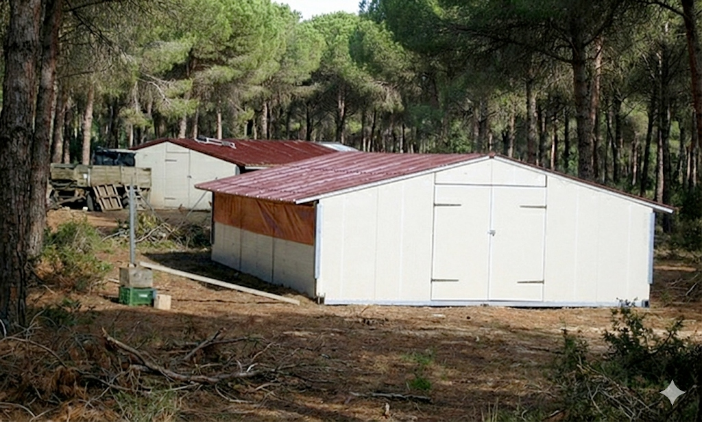
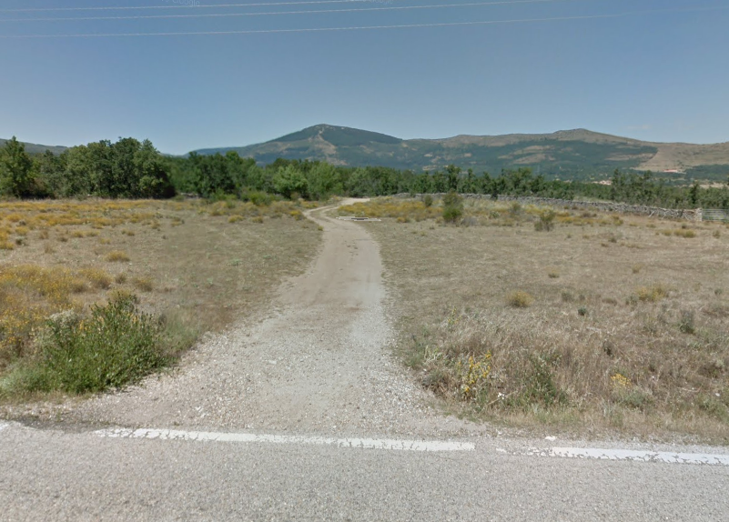

LA GRANJA
Nuestra granja se ubica en la Sierra Norte de Madrid, en el término municipal de Piñuécar-Gandullas. A 3 minutos de la salida 83 de la A1 en dirección a Aoslos y a 10 minutos de Buitrago del Lozoya.




🏠 La Nave y las Instalaciones
Tanto la nave como los parques donde pastorean las gallinas los hemos hecho siguiendo y aumentando todo lo que hemos podido las exigencias de la normativa ecológica.
Con respecto a la nave, cuenta con 300 m² para albergar a 1.600 gallinas (según la normativa ecológica son 6 gallinas/m²). Hemos dotado a la nave de un porche cubierto de 72 m² que sirve para que cuando por cuestiones epidemiológicas o climáticas las gallinas no puedan salir a pastorear libremente, cuenten con este porche donde poder salir y hacer sus actividades lo más normal posible.
La nave cuenta con una instalación fotovoltaica en el tejado que la nutre de la electricidad limpia necesaria y obtenemos el agua de un sondeo registrado y controlado en su caudal por la Confederación Hidrográfica del Tajo.
🌲 El Parque de las Gallinas (7.788 m² de Bosque)
El parque del que disponen las gallinas para estar libremente durante todo el día cuenta con 7.788 m² (según la normativa ecológica son 4 m² de parque por gallina), compuesto por una zona boscosa principalmente de pinos, pero también robles, encinas, fresnos y abedules.
El terreno cuenta además con abundante sotobosque de arbustos y especies herbáceas y aromáticas autóctonas como lavanda, espliego, cantueso, tomillo, jara… que enriquecen su alimentación y comportamiento natural.

🥚 Clasificación y Centro de Embalaje
La clasificación y el embalaje de los huevos se realiza en un centro de envasado propio y colindante a la nave.
Contamos con una clasificadora de huevos equipada con ovoscopio, lo que nos permite comprobar rigurosamente las condiciones estándar de frescura respecto a la yema y descartar posibles microfisuras de la cáscara. La clasificadora proporciona el marcaje oficial con la denominación 0 correspondiente a los huevos de producción ecológica certificada.
♻️ La Compostera y Economía Circular
En la finca hemos construido un estercolero impermeabilizado con sistema de recogida de lixiviados donde depositamos la gallinaza (excrementos de las aves) en los vaciados sanitarios y labores de limpieza.
Esta gallinaza la compostamos cuidadosamente y posteriormente la enviamos a una huerta ecológica local con la que mantenemos un acuerdo de aprovechamiento agronómico, cerrando el ciclo de nutrientes en la tierra de forma 100% circular.
NUESTROS HUEVOS
Huevos de sabor auténtico, de gallinas cuidadas con respeto y alimentadas con cereal 100% ecológico.
Nuestros huevos provienen de gallinas ponedoras de la raza ISA Brown, adquiridas en una granja de cría ecológica ubicada en Zaragoza. La cría de estas aves se hace bajo estricta normativa bio y llegan a nuestra nave con 17 semanas de vida.
En nuestra granja las gallinas continúan en régimen 100% ecológico: comen pienso bio certificado, salen al parque boscoso desde que amanece y disfrutan de libertad total hasta el anochecer, momento en que regresan voluntariamente a la nave para dormir seguras.
El primer mes las aves se aclimatan con calma al entorno del pinar y, aproximadamente a las 20 semanas de vida, inician su puesta.
ENTORNO REAL
Naves integradas en 7.788 m² de pinar virgen en la Sierra Norte.
CERTIFICACIÓN 0
Pienso 100% bio y manejo respetuoso sin pesticidas ni aditivos.
MÁXIMA FRESCURA
Del nido a tu mesa en un plazo inferior a 72 horas desde la puesta.
CANAL DIRECTO
Sin intermediarios comerciales: precio justo y trato directo con consumidoras.